Wir haben unsere beiden Datensätze in den vergangenen Sitzungen eingeladen, einige Variablen umkodiert und anhand univariater Maße einen ersten Eindruck ihrer Verteilung erhalten. Dieser erste Eindruck reicht allerdings nicht aus, um wirklich zu verstehen, wie die Variablen verteilt sind. Deshalb möchten wir uns in dieser Sitzung etwas Anschaulichkeit verschaffen, indem wir die Verteilung der Variablen visualisieren. Wir bleiben dabei im Bereich der univariaten Statistik, betrachten also jeweils nur eine Variable.
Damit wir mit unseren Datensätzen und den darin enthaltenen Variablen arbeiten können, müssen wir sie wie immer zuerst laden und zu unseren Zwecken umkodieren.
getwd()
setwd("eigener Pfad")
library(foreign)
gles <- read.spss(file = "ZA6801_de_v4-0-1.sav", to.data.frame = TRUE)
lijphart <- read.csv2("Lijphart_Data_recode.csv")# GLES
# Alter
q2c_num <- as.numeric(as.character(gles$q2c))
gles$alter <- 2017 - q2c_num
# Geschlecht
names(gles)[names(gles) == "q1"] <- "geschlecht"
# Einkommen kategorial
gles$einkommen_cat[gles$q192 == "unter 500 Euro" |
gles$q192 == "500 bis unter 750 Euro" |
gles$q192 == "750 bis unter 1000 Euro"] <- "weniger als 1000"
gles$einkommen_cat[gles$q192 == "1000 bis unter 1250 Euro" |
gles$q192 == "1250 bis unter 1500 Euro" |
gles$q192 == "1500 bis unter 2000 Euro"] <- "1000 bis 1999"
gles$einkommen_cat[gles$q192 == "2000 bis unter 2500 Euro" |
gles$q192 == "2500 bis unter 3000 Euro"] <- "2000 bis 2999"
gles$einkommen_cat[gles$q192 == "3000 bis unter 4000 Euro"] <- "3000 bis 3999"
gles$einkommen_cat[gles$q192 == "4000 bis unter 5000 Euro"] <- "4000 bis 4999"
gles$einkommen_cat[gles$q192 == "5000 bis unter 7500 Euro"] <- "5000 bis 7499"
gles$einkommen_cat[gles$q192 == "7500 bis unter 10000 Euro" |
gles$q192 == "10000 Euro und mehr"] <- "7500 und mehr"
gles$einkommen_cat <- factor(gles$einkommen_cat,
levels = c("weniger als 1000",
"1000 bis 1999",
"2000 bis 2999",
"3000 bis 3999",
"4000 bis 4999",
"5000 bis 7499",
"7500 und mehr"))
# Einkommen numerisch
gles$einkommen_num[gles$einkommen_cat == "weniger als 1000"] <- 1
gles$einkommen_num[gles$einkommen_cat == "1000 bis 1999"] <- 2
gles$einkommen_num[gles$einkommen_cat == "2000 bis 2999"] <- 3
gles$einkommen_num[gles$einkommen_cat == "3000 bis 3999"] <- 4
gles$einkommen_num[gles$einkommen_cat == "4000 bis 4999"] <- 5
gles$einkommen_num[gles$einkommen_cat == "5000 bis 7499"] <- 6
gles$einkommen_num[gles$einkommen_cat == "7500 und mehr"] <- 7
# Wohnort
gles$wohnort[gles$q197 == "Grossstadt"] <- "Großstadt"
gles$wohnort[gles$q197 == "kleine oder mittelgrosse Stadt"] <- "Kleinstadt"
gles$wohnort[gles$q197 == "laendliche Gegend oder Dorf"] <- "Land"
gles$wohnort[gles$q197 == "Vorstadt/ Vorort einer Grossstadt"] <- "Vorstadt"
# Links-Rechts-Selbsteinstufung
gles$LiRe <- as.character(gles$q32)
gles$LiRe[gles$LiRe == "1 links"] <- "1"
gles$LiRe[gles$LiRe == "11 rechts"] <- "11"
gles$LiRe <- as.numeric(gles$LiRe)
# Links-Rechts-Selbsteinstufung aggregiert
gles$LiRe_cat[gles$LiRe >= 1 &
gles$LiRe <= 2] <- "links"
gles$LiRe_cat[gles$LiRe >= 3 &
gles$LiRe <= 4] <- "moderat links"
gles$LiRe_cat[gles$LiRe >= 5 &
gles$LiRe <= 7] <- "mittig"
gles$LiRe_cat[gles$LiRe >= 8 &
gles$LiRe <= 9] <- "moderat rechts"
gles$LiRe_cat[gles$LiRe >= 10 &
gles$LiRe <= 11] <- "rechts"
gles$LiRe_cat <- factor(gles$LiRe_cat,
levels = c("links",
"moderat links",
"mittig",
"moderat rechts",
"rechts"))
# AfD-Wahl
gles$AfD.Wahl[gles$q19ba == "AfD"] <- 1
gles$AfD.Wahl[gles$q19ba != "AfD"] <- 0
# Lijphart
# ENPP
lijphart$enpp4510 <- as.numeric(lijphart$enpp4510)
# Gallagher-Index
lijphart$disprop4510 <- as.numeric(lijphart$disprop4510)
# Bikameralismus-Index
lijphart$bicam4510 <- as.numeric(lijphart$bicam4510)
# Minimal-Gewinn-Koalition mit einer Partei
lijphart$minwin_one_part4510 <- as.numeric(lijphart$minwin_one_part4510)
# Exekutivdominanz (Kabinettsdauer)
lijphart$exe_dom4510 <- as.numeric(lijphart$exe_dom4510)ggplot2Wir haben das Paket ggplot2 bereits in der ersten
Sitzung heruntergeladen, als es darum ging, die Paketstruktur von
R kennenzulernen. ggplot2 ist das gängigste
Grafikpaket in R und ist Teil des tidyverse,
einer Gruppe von Paketen zur Datenanalyse, die einen gemeinsamen
“Dialekt” sprechen. Das tidyverse wurde von einer Gruppe von
Statistikern um Hadley Wickam entwickelt und im frei erhältlichen Buch
R for Data
Science anschaulich erläutert (Tipp für weitergehend
Interessierte).
In ggplot2 sind Grafiken in Form von layers
(“Schichten”) aufgebaut. Die unterste Schicht ist eine “weiße Leinwand”,
die wir schrittweise mit Elementen der Datenvisualisierung (sogenannten
geoms) füllen. Die zentrale Funktion zur
Datenvisualisierung mithilfe von ggplot2 ist
ggplot(). Mit ggplot() beginnen wir eine
Grafik, indem wir die verwendeten Daten festlegen und bestimmen, wie die
Daten ästhetisch umgesetzt werden (mit dem Argument
mapping). Damit ist die “weiße Leinwand” erstellt. Wie die
Grafik genau aussehen soll, legen wir dann mit den geoms
fest. Dadurch bestimmen wir den Typ der Visualisierung, also ob es sich
z.B. um ein Balkendiagramm oder ein Histogramm handeln soll.
Im Folgenden erstellen wir mit der Funktion ggplot()
Grafiken (plots), welche die Verteilung einzelner Variablen
veranschaulichen. Wir erstellen Balkendiagramme, Histogramme und
Boxplots. Wie immer, wenn wir Pakete verwenden, die nicht vorinstalliert
sind, müssen wir sie zunächst laden.
library(ggplot2)Balkendiagramme sind die wohl einfachste und bekannteste Form der Visualisierung von Verteilungen für nominalskalierte bzw. kategoriale Variablen. Sie zeigen die Häufigkeit pro Merkmalsausprägung/Kategorie anhand der Höhe eines Balkens.
Ein einfaches Balkendiagramm ist recht einfach zu erstellen. Wir
beginnen den Plot mit der Funktion ggplot(), indem wir das
Argument data auf gles, also einen Dataframe,
und das Argument mapping auf die Funktion
aes() (für “aestetics”) setzen. Mit aes()
bestimmen wir, welche Daten in der Abbildung Verwendung finden und somit
ästhetisch umgesetzt werden sollen. Hier nennen wir die Variable
einkommen_cat (ohne $). So erstellen wir die
“weiße Leinwand”.
ggplot(data = gles, mapping = aes(x = einkommen_cat))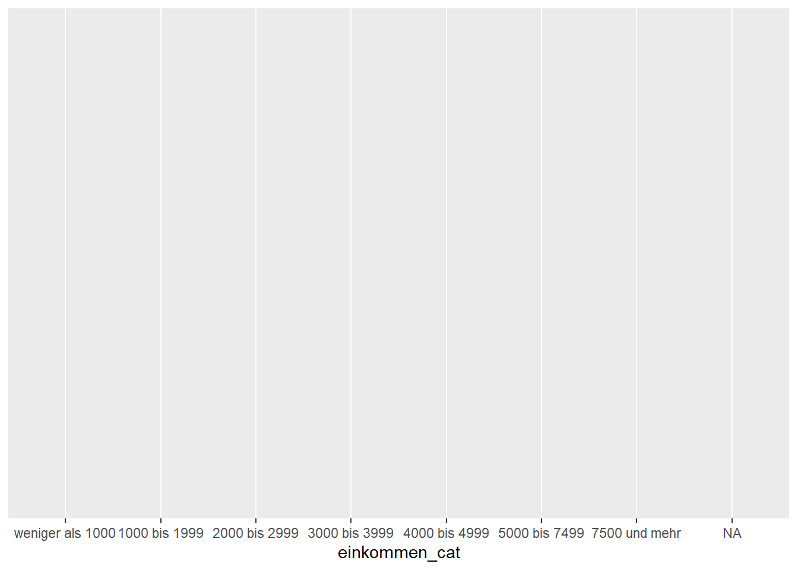
Nun fügen wir den geom hinzu, der ein Balkendiagramm (“barplot”)
erzeugt. Er lautet: geom_bar(). Dazu schreiben wir
lediglich ein + an das Ende der Codezeile und fügen den
geom hinzu (wir verzichten hier auf das Argument
x, da wir nur eine Variable berücksichtigen).
ggplot(data = gles, mapping = aes(einkommen_cat)) +
geom_bar()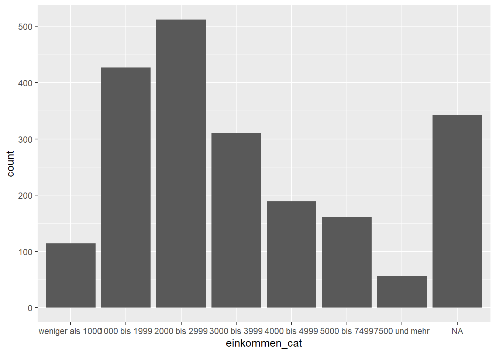
Dieser Entwurf ist bereits informativ und verschafft uns einen guten
Eindruck der Verteilung. Allerdings können wir ihn noch etwas
verbessern. Zunächst stören die NAs, die keine inhaltliche
Interpretation zulassen. Wir entfernen sie, indem wir mittels eckiger
Klammern [] nur die Zeilen des Dataframes gles behalten,
die in der Variable einkommen_cat kein NA enthalten. Wir
kehren die Bedeutung von is.na() um, indem wir ein
Ausrufezeichen ! voranstellen. Alles vor dem Komma in den
eckigen Klammern bezieht auf die Zeilen eines Objekts (s. Sitzung 2).
Wenn wir also !is.na(gles$einkommen_cat) in die eckigen
Klammern vor das Komma schreiben, erstellen wir ein Subset von gles, das
nur die Zeilen enthält, für die einkommen_cat nicht
NA ist.
ggplot(data = gles[!is.na(gles$einkommen_cat), ], mapping = aes(einkommen_cat)) +
geom_bar()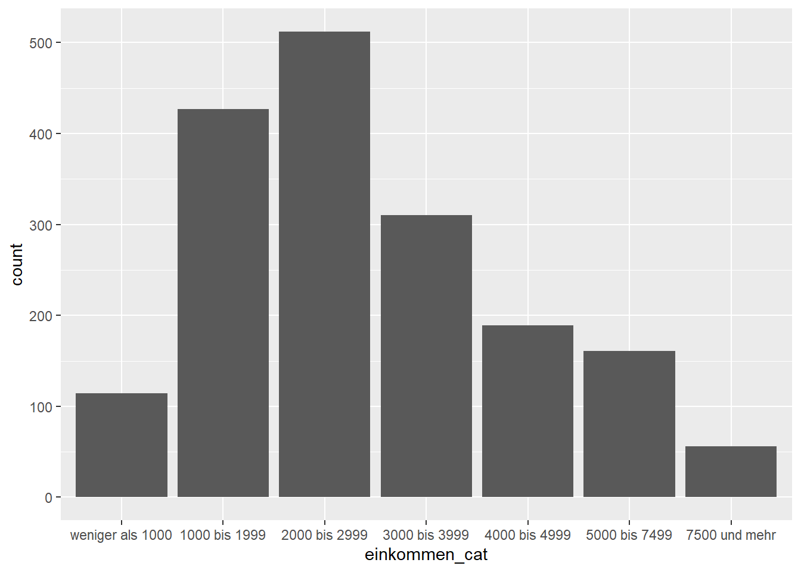
Dieser Code wirkt etwas uneinheitlich, weil bei
!is.na(gles$einkommen_cat) der Datensatz gles
mit $ vor der Variable genannt werden muss, bei
aes(einkommen_cat) dagegen nicht. Das liegt daran, dass der
“Dialekt” des tidyverse, der in ggplot2
verwendet wird, die Spezifizierung von Datensätzen vor Variablen nicht
braucht. Hier hat also die Paketstruktur von R Folgen für
die Schreibweise des Codes: aes() ist Teil von
ggplot2, is.na() nicht.
Außerdem fehlt ein Titel und die Achsenbeschriftung ist recht
technisch. Die Beschriftung der y-Achse braucht es auch nicht unbedingt.
Um die Beschriftungen des Plots anzupassen, nutzen wir die Funktion
labs() (kurz für “labels”) und spezifizieren den Titel
(title), den Untertitel (subtitle), die
Beschriftung der x-Achse und die Beschriftung der y-Achse. Wie zuvor
wird labs() mit einem + angefügt und stellt
somit eine weitere Schicht dar, die auf den Plot gelegt wird.
ggplot(data = gles[!is.na(gles$einkommen_cat), ], mapping = aes(einkommen_cat)) +
geom_bar() +
labs(title = "Netto-Haushaltseinkommen der Befragten",
subtitle = "GLES 2017",
x = "Haushaltseinkommen in Euro",
y = NULL)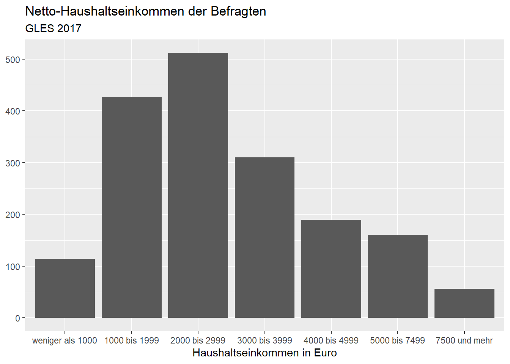
Wenn wir der Meinung sind, dass die Balken etwas breit geraten sind,
können wir sie mit dem Argument width (“Breite”) in der
Funktion geom_bar() anpassen. Standardmäßig ist sie auf 90
% des Raumes, der für eine Kategorie eingeräumt ist, eingestellt. Wir
setzen sie mit 0.5 auf 50 %.
ggplot(data = gles[!is.na(gles$einkommen_cat), ], mapping = aes(einkommen_cat)) +
geom_bar(width = .5) +
labs(title = "Netto-Haushaltseinkommen der Befragten",
subtitle = "GLES 2017",
x = "Haushaltseinkommen in Euro",
y = NULL)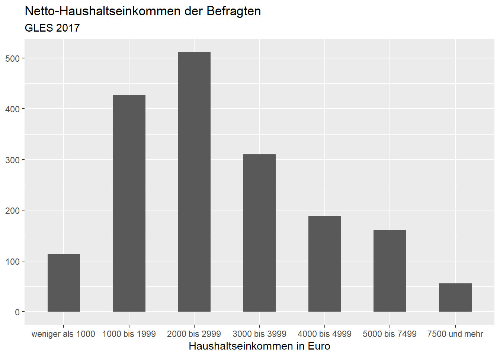
Schließlich möchten wir die Farbe der Balken verändern. Die Füllung
der Balken bestimmen wir mit dem Argument fill, während wir
mit color die Farbe der Umrandung anpassen. Wir wollen
blaue Balken, die schwarz umrandet sind. Die in R zur
Verfügung stehenden Farben können Sie googeln. In wissenschaftlichen
Publikationen und Arbeiten im Rahmen des Studiums ist eine schlichte
Darstellungsweise für Abbildungen (Verwendung von Graustufen)
angemessen.
ggplot(data = gles[!is.na(gles$einkommen_cat), ], mapping = aes(einkommen_cat)) +
geom_bar(width = .5, color = "black", fill = "steelblue2") +
labs(title = "Netto-Haushaltseinkommen der Befragten",
subtitle = "GLES 2017",
x = "Haushaltseinkommen in Euro",
y = NULL) 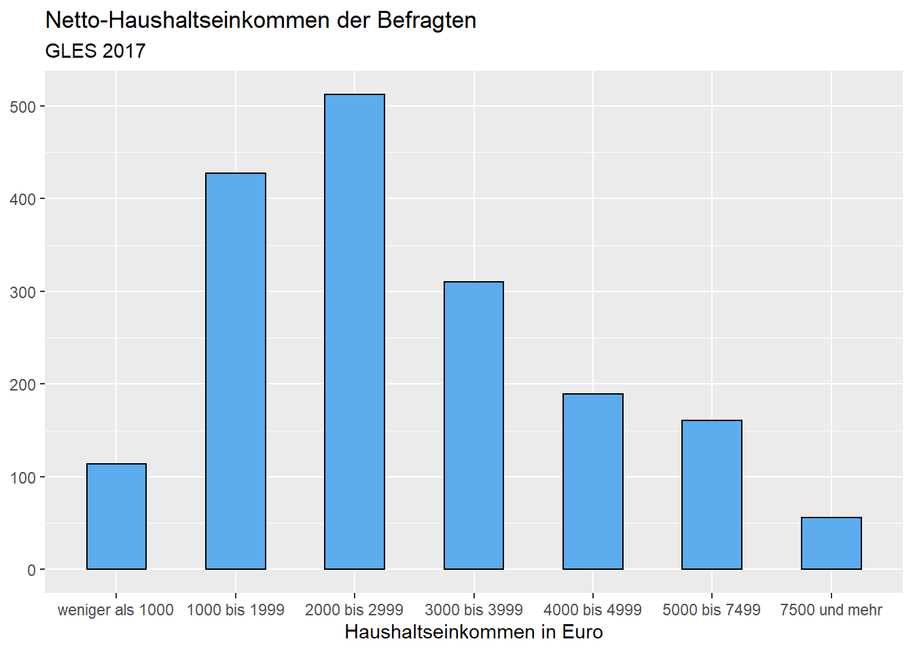
Histogramme zeigen die Häufigkeiten pro Kategorie im Gegensatz zu
Balkendiagrammen nicht durch die Höhen der Balken, sondern durch ihre
Fläche (Kühnel/Krebs 2014: 61). Die Flächen über den Klassen sollen
proportional zu den Häufigkeiten in den Klassen sein (Flächentreue). Die
y-Achse des Histogramms stellt also die Häufigkeitsdichte dar. Das
Produkt aus Häufigkeitsdichte und Klassenbreite ergibt die
Klassenhäufigkeit. Histogramme setzen metrisches Skalenniveau voraus.
Wie detailliert Histogramme die Verteilung einer Variable abbilden,
hängt von der gewählten Intervallbreite ab, also von der Breite der
Balken. Alle Beobachtungen werden bei der Berechnung der Fläche eines
Balkens berücksichtigt, die innerhalb des entsprechenden Intervalls
liegen. Häufen sich Beobachtungen zu beiden Seiten einer
Intervallgrenze, wird diese Häufung nicht angemessen repräsentiert,
sondern verläuft sich in der Berechnung der Fläche beider Balken. Durch
Verringerung der Intervallbreite, können wir diesem Problem Abhilfe
verschaffen. In seiner einfachen Form sieht die Funktion zur Erstellung
eines Histogramms wie folgt aus (hier wurde lediglich der
Geom geom_bar() durch geom_histogram()
ersetzt). Wir erstellen das Histogramm für das Alter der Befragten der
GLES:
ggplot(data = gles, mapping = aes(alter)) +
geom_histogram()## `stat_bin()` using `bins = 30`. Pick better value with `binwidth`.## Warning: Removed 1 rows containing non-finite values (stat_bin).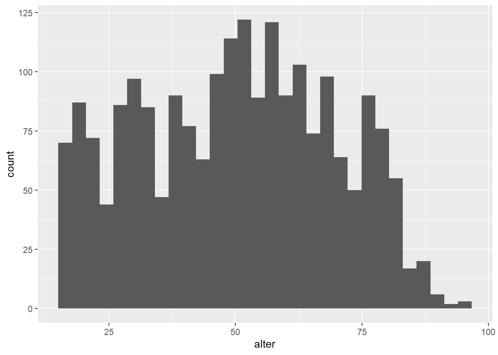
Mit Beschriftungen und Balkenumrandungen (genau wie zuvor):
ggplot(data = gles, mapping = aes(alter)) +
geom_histogram(color = "black") +
labs(title = "Alter der Befragten",
subtitle = "GLES 2017",
x = "Alter in Jahren",
y = NULL) ## `stat_bin()` using `bins = 30`. Pick better value with `binwidth`.## Warning: Removed 1 rows containing non-finite values (stat_bin).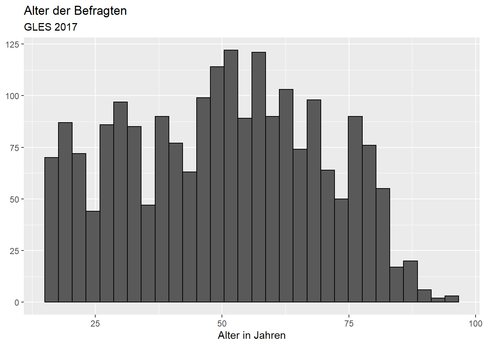
Bisher wurde dabei die voreingestellte Intervallbreite (Breite der
Balken) verwendet. Wenn wir die Intervallbreite auf zehn Jahre ändern,
bildet das Histogramm die Verteilung weniger präzise ab. Dazu setzen wir
das Argument binwidth (bin für “Balken”, width für
“Breite”) auf 10:
ggplot(data = gles, mapping = aes(alter)) +
geom_histogram(binwidth = 10, color = "black") +
labs(title = "Alter der Befragten",
subtitle = "GLES 2017",
x = "Alter in Jahren",
y = NULL) ## Warning: Removed 1 rows containing non-finite values (stat_bin).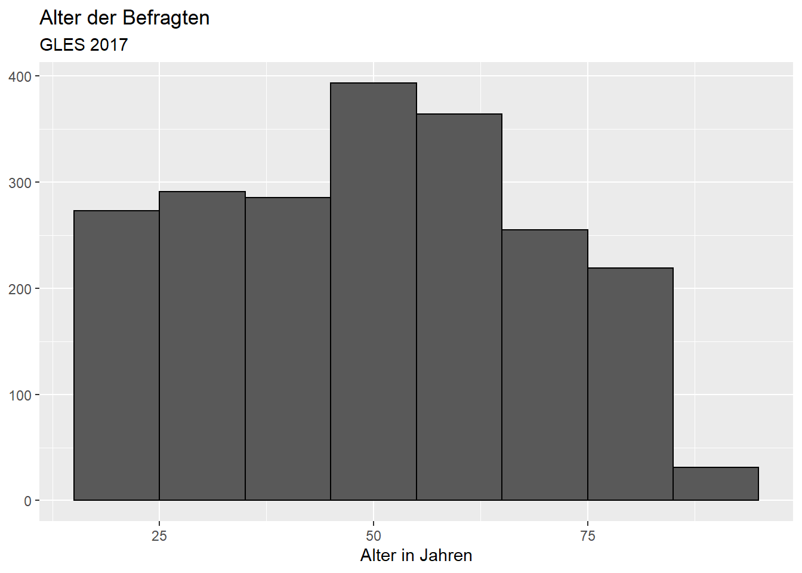
Alternativ könnten wir mit bins die Anzahl der Balken festlegen, die wir erzeugen wollen, z.B. 15 Balken:
ggplot(data = gles, mapping = aes(alter)) +
geom_histogram(bins = 15, color = "black") +
labs(title = "Alter der Befragten",
subtitle = "GLES 2017",
x = "Alter in Jahren",
y = NULL) ## Warning: Removed 1 rows containing non-finite values (stat_bin).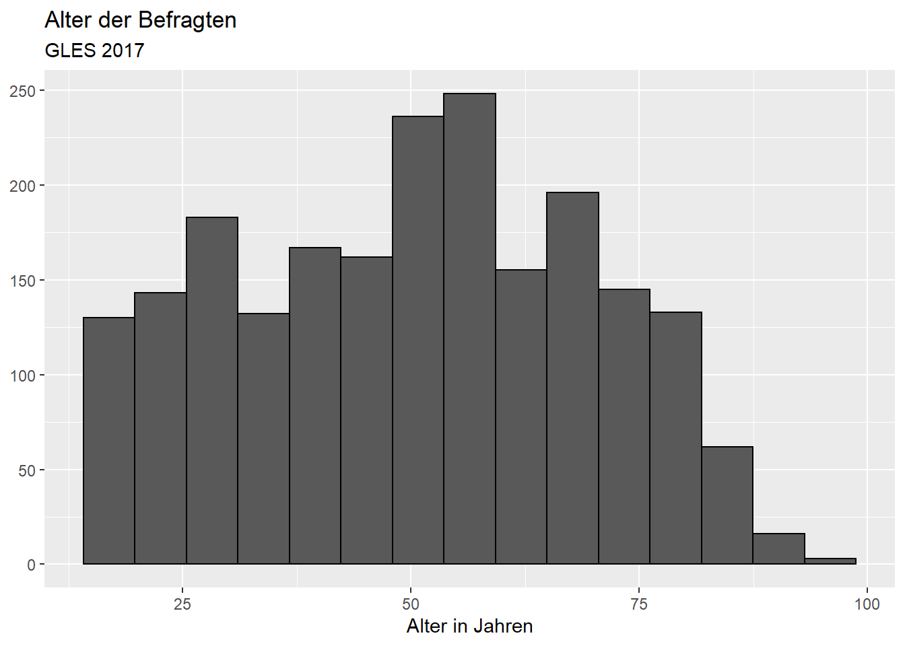
Boxplots dienen der Visualisierung der Verteilung einer metrischen
Variable und stellen diese besonders anschaulich dar. Boxplots plotten
eine Verteilung über ihren Wertebereich und zeigen, an welcher Stelle
welche Lagemaße liegen. Der Median bzw. das zweite Quartil ist durch den
Strich in der Box gekennzeichnet. Das obere bzw. untere Ende der Box
stellt das erste bzw. dritte Quartil dar. Die Box enthält also die
mittleren 50 % der Ausprägungen einer Variable. Whisker umfassen Werte,
die das 1.5-fache des IQR (75 % - 25 %) vom oberen bzw. unteren Ende der
Box entfernt sind. Ausreißer, also Werte, die zwischen dem 1.5- und dem
3-fachen des IQR vom Ende der Box entfernt sind, kennzeichnet
R mit Punkten.
In seiner einfachen Form sieht der Code zur Erstellung eines Boxplots folgendermaßen aus:
ggplot(data = gles, mapping = aes(alter)) +
geom_boxplot()## Warning: Removed 1 rows containing non-finite values (stat_boxplot).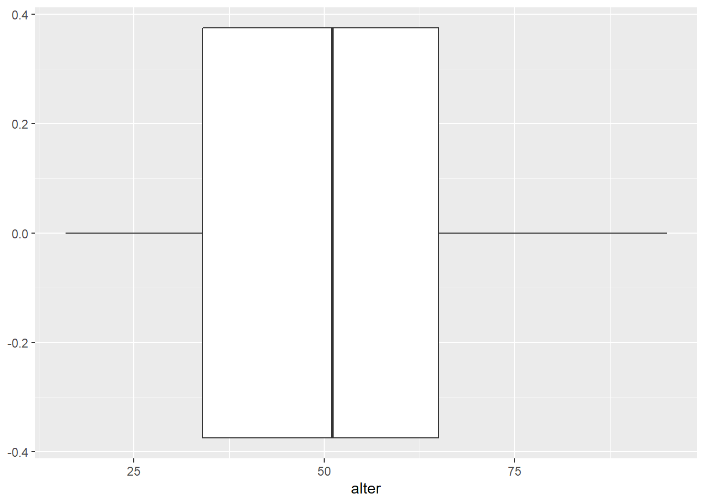
Wenn wir den Plot kippen möchten, verwenden wir die Funktion
coord_flip() als zusätzliches Layer. Da sich diese nicht
speziell auf die Funktion geom_boxplot() bezieht, kann
diese auch bei anderen Darstellungen verwendet werden.
ggplot(data = gles, mapping = aes(alter)) +
geom_boxplot() +
coord_flip()## Warning: Removed 1 rows containing non-finite values (stat_boxplot).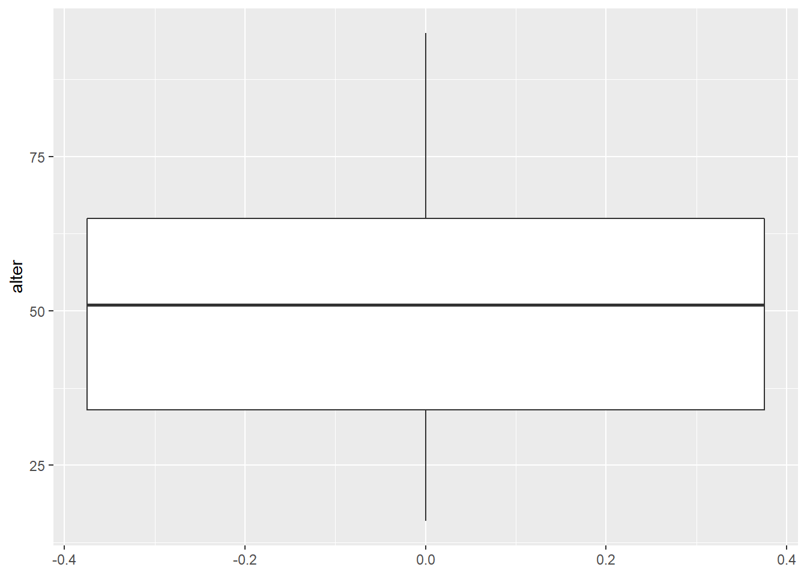
Nun fügen wir wieder die weiteren Darstellungsoptionen hinzu. Lassen
Sie sich nicht verwirren: Weil das Koordinatensystem gekippt wurde, ist
die x-Achse links und die y-Achse unten zu sehen. Wenn wir die Titel der
x- und y-Achse mit labs() festlegen, sind also auch diese
vertauscht.
ggplot(data = gles, mapping = aes(alter)) +
geom_boxplot() +
coord_flip() +
labs(title = "Alter der Befragten",
subtitle = "GLES 2017",
x = "Alter in Jahren",
y = NULL)## Warning: Removed 1 rows containing non-finite values (stat_boxplot).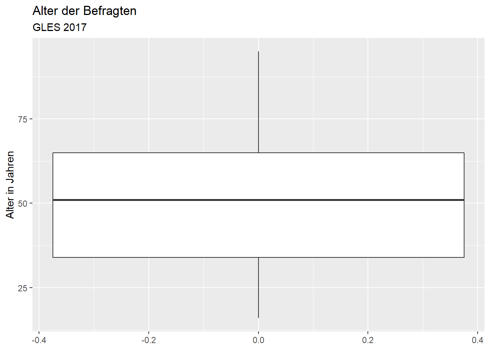
Die Achsenbeschriftung für das Alter ist wenig detailliert, sodass
wir beispielsweise zum Ablesen der Lage des ersten und dritten Quartils
sehr schätzen müssten. Die x-Achse modifizieren wir mit
scale_x_continuous(). Die einzelnen Skalenmarkierungen
legen wir entweder über das Argument breaks fest, wenn wir die Position
jeder einzelnen Markierung ausdrücklich bestimmen möchten (also z.B.
breaks = c(5, 10, 15, ...)). Alternativ können wir
n.breaks (“number of breaks”) verwenden, wenn wir lediglich
festlegen wollen, wie viele Markierungen es sein sollen. Da wir
Markierungen aller Fünf-Jahre-Intervalle möchten, ist die Verwendung von
n.breaks deutlich einfacher. In diesem Fall möchten wir 18
Markierungen.
ggplot(data = gles, mapping = aes(alter)) +
geom_boxplot() +
coord_flip() +
labs(title = "Alter der Befragten",
subtitle = "GLES 2017",
x = "Alter in Jahren",
y = NULL) +
scale_x_continuous(n.breaks = 18)## Warning: Removed 1 rows containing non-finite values (stat_boxplot).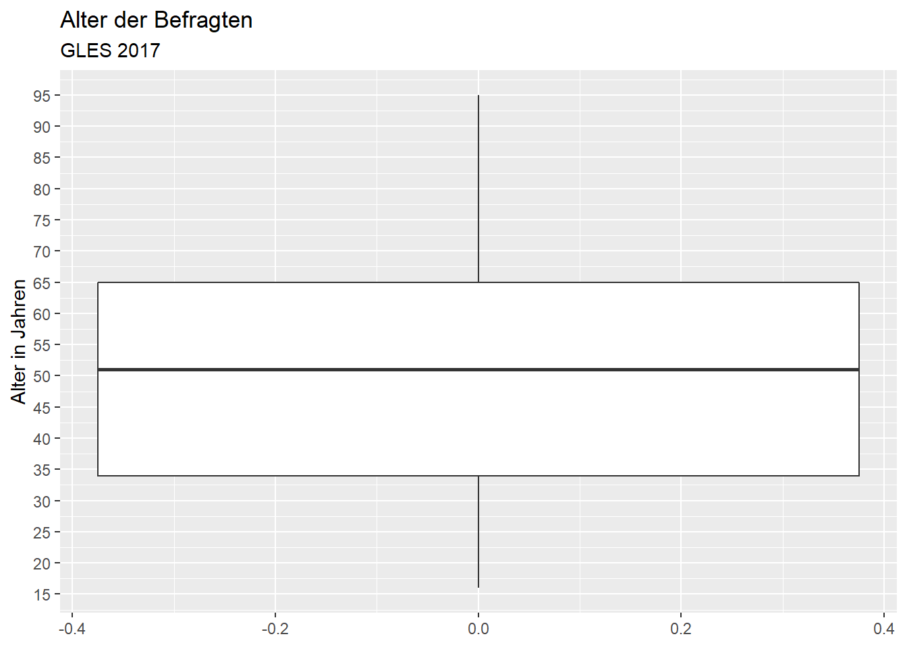
Das Median-Alter liegt bei etwas über 50 Jahren. Die Befragten, welche die Grenzen des ersten und dritten Quartils bilden, sind etwa 35 und 65 Jahre alt. Die jüngste Person ist 16 oder 17 Jahre alt, die älteste 95 Jahre. Es gibt keine Ausreißer, d.h. alle Befragten, die nicht zwischen dem ersten und dritten Quartil liegen (innerhalb der Box), liegen innerhalb des 1.5-fachen der Länge der Box oberhalb oder unterhalb des ersten bzw. dritten Quartils (das wäre bei der Variable Alter auch unwahrscheinlich, da ein Ausreißer älter als 1.5 ⋅ IQR + 3. Quartil = 1.5 ⋅ 30 + 65 = 110 Jahre sein müsste.).
disprop4510). Die Balken des Histogramms sollen jeweils
weiß gefüllt und schwarz umrandet sein. Zwischen den beiden Histogrammen
sollen sichtbare Differenzen bezüglich der Intervallbreite erkennbar
sein.enpp4510). Die
Skala soll Markierungen bei jeder halben Zahl innerhalb des
Wertebereiches aufweisen.